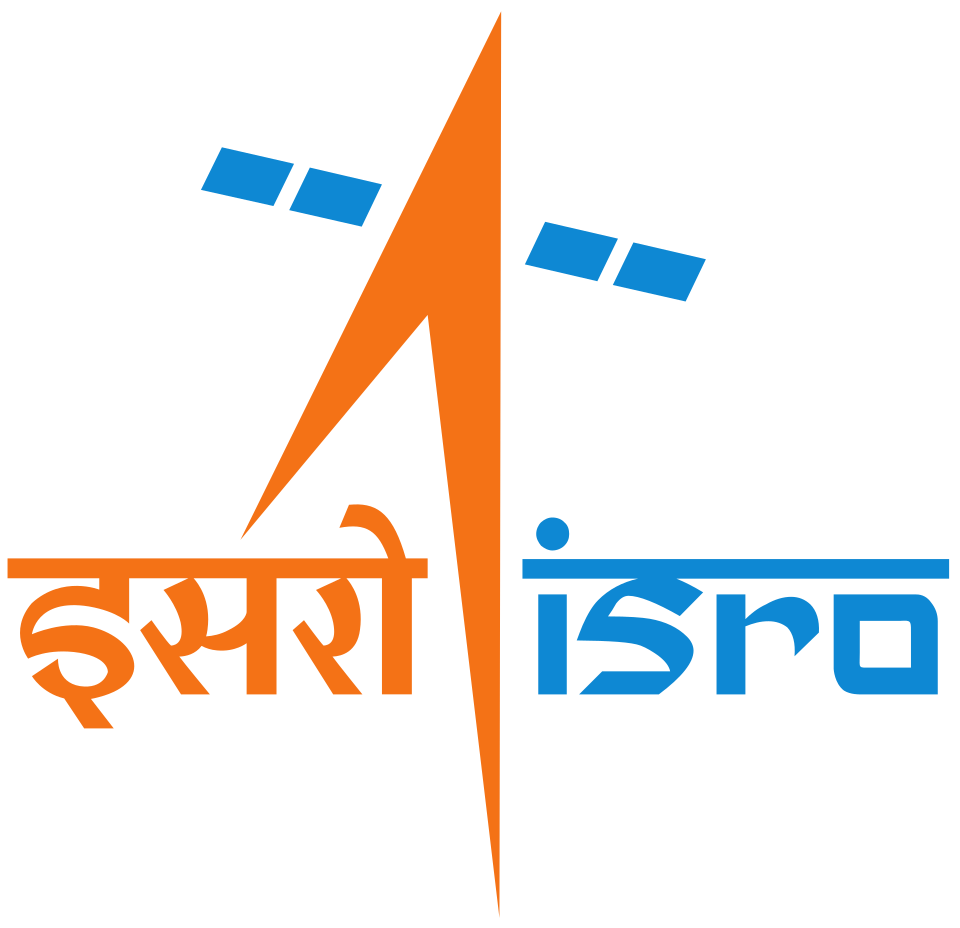

인도우주연구기구 Indian Space Research Organisation
인도우주연구기구(Indian Space Research Organisation)는 인도의 우주개발을 담당하는 기구이다. 우주와 관련된 기술과 그 응용을 목적으로 하며 인도 우주부 산하기관이다.
최종 업데이트

인도우주연구기구는 어떤 브랜드인가
인도우주연구기구는 인도의 우주개발을 담당하는 기구이며, 영어 약칭은 ISRO이다. 우주와 관련된 기술과 그 응용을 목적으로 하며, 인도 우주부의 산하기관이다.
본부는 벵갈루루에 있고, 미화 약 13억 달러를 예산으로 약 2만 명의 직원이 소속되어 있다. 인도는 1972년 세계 최초로 정부 부서인 인도 우주부(Department of Space)를 만들었다.
인도 남부 안드라프라데시주의 스리하리코타에는 비크람 사라바이 우주센터가 있으며, 사라바이의 이름은 비카스 로켓 엔진에도 쓰인다. 2010년에는 한국의 카리(KARI)와 우주 원격탐사, 우주통신, 우주과학, 인력양성 분야의 협력을 강화하는 양해각서를 체결했다.
인도우주연구기구는 어떻게 시작되고 성장했나
인도의 첫 총리 자와할랄 네루와 그의 측근인 과학자 비크람 사라바이는 1962년 인도우주연구위원회(INCOSPAR)를 설립했다. 이 조직은 1969년 ISRO로 이름이 변경되었다.
인도는 1972년 세계 최초로 정부 부서인 인도 우주부를 만들었고, ISRO는 그 산하기관이다. 비크람 사라바이는 인도 우주 연구 역사에서 매우 유명하며, 우주센터와 비카스(로켓 엔진)의 이름으로 사용되고 있다.
2010년 1월 28일 ISRO는 2016년 유인우주선을 발사할 계획이라고 밝혔고, 벵갈루루에 우주인 훈련 센터를 건설하며 4년간 유인우주선을 개발할 계획이라고 했다.
인도우주연구기구의 브랜드 아이덴티티는 무엇인가
인도의 우주개발을 담당하는 정부 기구로, 인도 우주부 산하에서 우주 기술과 그 응용을 다룬다. 벵갈루루에 본부를 둔다.
인도우주연구기구는 지금 어떤 상태인가
ISRO는 벵갈루루에 본부를 두고 있으며, 미화 약 13억 달러를 예산으로 약 2만 명의 직원이 소속되어 있다. 인도 우주부의 산하기관으로서 우주와 관련된 기술과 그 응용을 목적으로 한다.
2010년 1월 25일에는 한국의 카리(KARI)와 우주의 평화적 이용을 위한 협력 양해각서를 체결했다. 같은 해 6월 18일에는 한국이 향후 위성 발사 때 인도산 위성발사체를 사용하기로 합의했다.
인도우주연구기구 로고는 어떻게 변해왔나
자주 묻는 질문
인도우주연구기구는 어느 나라 브랜드인가요?
인도우주연구기구는 인도의 기술·전자 브랜드입니다.
인도우주연구기구는 언제 설립되었나요?
인도우주연구기구는 1969년 설립되었습니다.
인도우주연구기구의 브랜드 아이덴티티는 무엇인가요?
인도의 우주개발을 담당하는 정부 기구로, 인도 우주부 산하에서 우주 기술과 그 응용을 다룬다.
인도우주연구기구는 현재 어떤 상태인가요?
ISRO는 벵갈루루에 본부를 두고 있으며, 미화 약 13억 달러를 예산으로 약 2만 명의 직원이 소속되어 있다.
인도우주연구기구의 창업자는 누구인가요?
인도우주연구기구의 창업자는 비크람 사라바이입니다(위키데이터 기준).
인도우주연구기구의 본사는 어디에 있나요?
인도우주연구기구의 본사는 벵갈루루에 있습니다(위키데이터 기준).
인도우주연구기구의 모기업은 어디인가요?
인도우주연구기구의 모기업은 인도 우주부입니다(위키데이터 기준).
출처와 검증
인도우주연구기구 관련 참고: 공식 웹사이트 · 위키데이터 Q229058 · 한국어 위키백과 · 영어 위키백과. 브랜드명은 한글과 원어를 함께 표기하되 데이터에 없는 표기는 만들지 않습니다. 기원 국가·설립연도는 검수된 정의문에서 확인된 값을 우선하고, 없을 때만 공식 웹사이트 URL이 일치하는 위키데이터 개체의 값을 씁니다. 위키데이터 값은 2026-10-18 기준입니다.